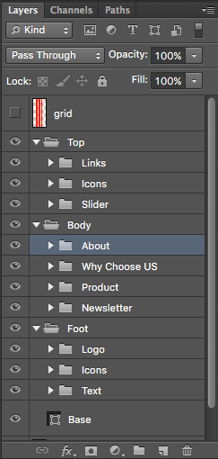

Lewis | Creative Portfolio PSD Template
Version 1.0 - by LoganCee
- Created: Jul 2, 2019
- Latest update: Jul 2, 2019
- By: LoganCee
- Email: martist1639@gmail.com
Thank you for purchasing my template. If you have any questions that are beyond the scope of this help file, please feel free to email via my user page contact form here: LoganCee on ThemeForest. Thanks so much!
Description
“ Lewis is a creative & modern PSD template for portfolio theme. Approach with new trending design, focus on clean, modern and minimalist design, Lewis will make your website look more impressive and attractive to viewers. Included many animations (GIF) help you easy to coding with special effects of it. Help increase the rate of interaction with your users and bring you more leads. Designed on grid system of Bootstrap, your site will look sharp on all screens. My package includes 33 well-organized PSD files, with this template you can use it for a lot of portfolio showcase website such as agency, studio, freelancer, photographer, architecture, etc.
Motivation me with 5 stars if you love Lewis.
Template Features
- 33 PSD files included
- 7 Unique & Modern Demos, included Animation
- Beautifully Work Pages Design
- Professional Blogging Layout Design
- Morden, clean & trendy design
- Designed on 1170px Grid System
- Easy & customizable PSD files
- Free Google Fonts.
- Free Font Based Icons.
- Great Support 24/7.
- Extended documentation
PSD Files Included
- 01_home_flash.psd
- 02_home_horizontal.psd
- 03_home_minimal.psd
- 04_home_zoom_parallax.psd
- 05_home_3D_parallax.psd
- 06_home_pilling.psd
- 07_home_video.psd
- 08_work_grid.psd
- 09_work_masonry.psd
- 10_work_metro.psd
- 11_work_listing.psd
- 12_work_carousel.psd
- 13_work_parallax.psd
- 14_single_project_web_design.psd
- 15_single_project_mobile_app.psd
- 16_single_project_branding.psd
- 17_single_project_photograhpy.psd
- 18_news_grid.psd
- 19_news_masonry.psd
- 20_news_with_sidebar.psd
- 21_single_post_no_sidebar.psd
- 22_single_post_with_sidebar.psd
- 23_about_me.psd
- 24_about_us.psd
- 25_service.psd
- 26_our_team.psd
- 27_contact.psd
- 28_career.psd
- 29_career_detail.psd
- 30_404.psd
- 31_coming_soon.psd
- 32_menu_canvas.psd
- 33_menu_sub.psd
Fonts Used
- Karla, Abril Fatface (Google Font)
How To Edit PSD File
In order to edit the file, you need to have Adobe Photoshop installed on your system, and installed the fonts mentioned in the description.
As you can see on the right, the layers are well organized and gropued into folders, which make editing very easy.
That's all! Enjoy.

Sources and Credits
Icons Used
Note: All images are just used for preview purpose only and NOT included in this item and you need to contact authors to get permission in case you want to use them in your commercial or non-commercial projects.
Online Support
This is just a part of what is included in this template. There is much more in there so you should check out the screenshots. If you have any questions about customization of this template which are not covered in the documentation feel free to ask a question in the comment section or contact me directly via e-mail form on my profile page.
- Email: martist1639@gmail.com
Don't forget to rate the template, If you like Lewis. I really appriciate this, thanks so much!
A Product of LoganCee
May you also intersted :